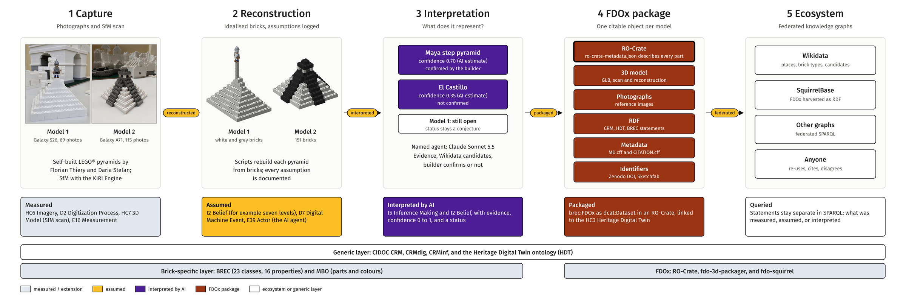
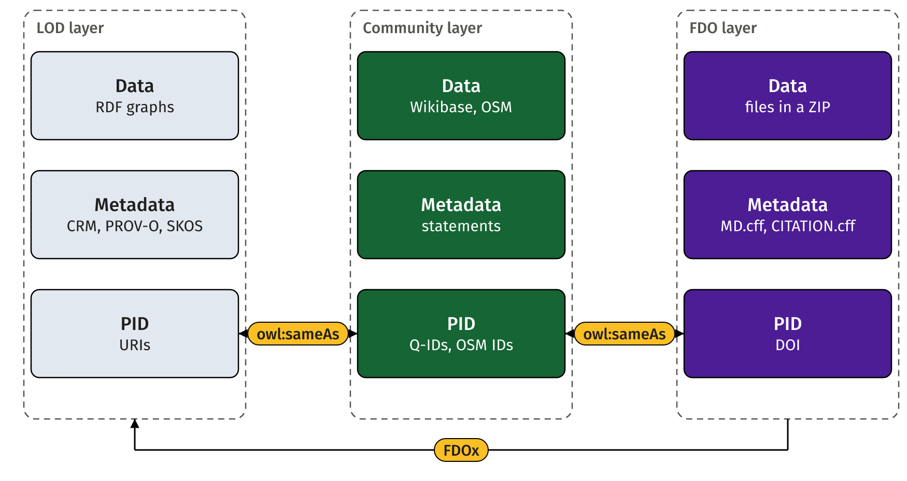

Figures: help pages
Working pages for figures that are made and checked in the open.

From Relations to Graphs: (Geo-)Spatial data in the Cultural Heritage Domain
Open the gallery →
DH 2027: poster abstract and short paper
Open the gallery →
Federating the Dragons: CAA 2026 proceedings paper
Open the gallery →